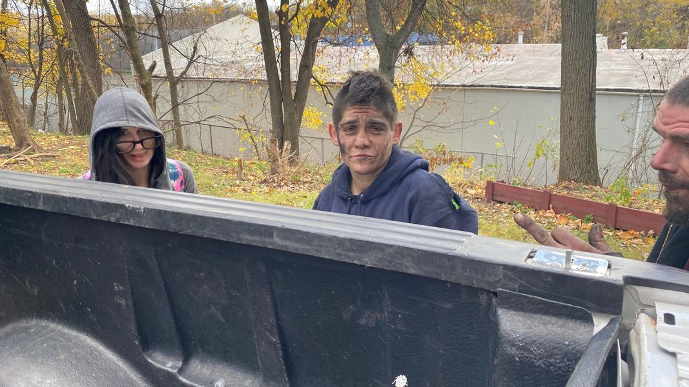

Timeline photos
Homeless People Are Hated Like Jews Are Hated.
I have debated if the work I'm doing is similar to the Underground Railroad in Slave America or Jewish rescuers in Nazi Germany.
The biggest disconnect between slaves and homeless people is that slaves were not being eradicated. They were property that slave holders wanted returned.
Nazi extermination only wanted one thing: to wipe Jews off the face of the earth. That's much more similar to how we think of homeless people.
The city of Akron has clearly stated to me that they "want to see what I do this winter". How much more they look to punish me for helping homeless people will be in direct relation to how much they can determine I attempt to help homeless people.
I now face fines and jail time for putting so much as one tent on my land.
Helping Americans to survive in the winter is now clearly against the law, particularly for me. Just as sheltering Jews in Nazi Germany was against the law. There is only one answer to the Homeless problem in America: comply or go away.
There is a well-structured homeless camp that is going to be bulldozed on Tuesday. I thought about protesting this inhumane cruelty. But to what end? They don't care what people think of them.
My focus is now going to be to hide homeless people. We must find places for homeless people to shelter that society cannot detect. Homeless people are largely hated by the government and much of society. One phone call and a homeless person will get all of their belongings thrown away by the government.
Being homeless is illegal and hated in Akron Ohio.